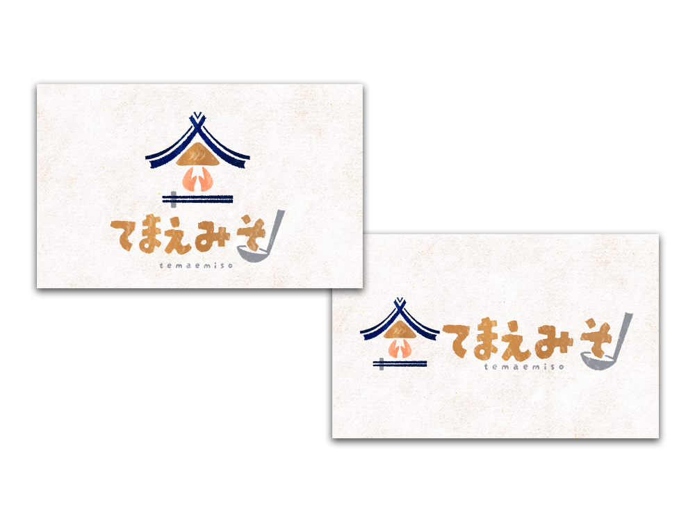

ECサイト
てまえみそ様ロゴ
ロゴデザイン

- 概要
-
こだわり味噌とお肉を販売しているECサイト『てまえみそ』様のロゴを作成しました。
【依頼詳細】
- ロゴのイメージ：こだわりの味噌。健康志向。オーガニック。
- 利用用途：ウェブサイト
- ターゲット層：30－50代の通販サイトを頻繁に利用する男女。
- 雰囲気：日本らしく、版画のようなデザイン
- 目的・ゴール
- ECサイトのイメージに合うロゴを作成し、味噌にこだわりを持っているという個性をアピールす。
- コンセプト
- 大切なひとに届くこだわりのお味噌料理
- 制作ポイント
- メインのシンボルロゴの上部は、蔵の下に大切な味噌がある様子を表しており、販売している味噌は丁寧に大切に作られている事を意図しています。
両手と箸は、『いただきます』の形をしており、贈り物にも家庭用にも美味しく笑顔で食べていただきたいという想いを込めております。
『てまえみそ』はロゴを見ていただいた方が少しでも印象に残っていただけるように、『そ』をお玉ですくっているデザインにし、遊び心を入れました。
- 制作期間
- 4時間
- 使用ツール
- illustrator